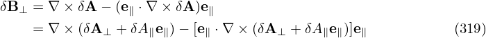
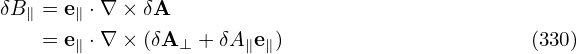
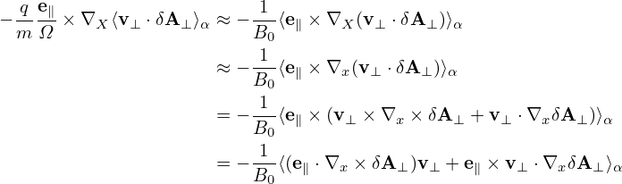

Note that

Correct to order O(λ), δB⊥ in the above equation is written as (e∥ vector can be considered as constant because its spatial gradient combined with δA will give terms of O(λ2), which are neglected)
Using local cylindrical coordinates (r,ϕ,z) with z being along the local direction of B0, and two components of A⊥ being Ar and Aϕ, then ∇× A⊥ is written as
| (322) |
Note that the parallel gradient operator ∇∥≡ e∥⋅∇ = ∂∕∂z acting on the the perturbed quantities will result in quantities of order O(λ2). Retaining terms of order up to O(λ), equation (322) is written as
| (323) |
i.e., only the parallel component survive, which exactly cancels the last term in Eq. (321), i.e., equation (321) is reduced to
| (324) |
In terms of δBxL and δByL, δB⊥ is written as
| (325) |
Dotting the above equation by ∇x and ∇y, respectively, we obtain
| (326) |
| (327) |
Equations (326) and (327) can be further written as
| (328) |
and
| (329) |
The solution of this 2 × 2 system is expressed by Cramer’s rule in the code.
Use B0 = Ψ′∇x ×∇y
b = Ψ′∇x ×∇y∕B0

Accurate to O(λ1), δB∥ in the above equation is written as (e∥ vector can be considered as constant because its spatial gradient combined with δA will give O(λ2) terms, which are neglected)
[Using local cylindrical coordinates (r,ϕ,z) with z being along the local direction of B0, and two components of δA⊥ being δAr and δAϕ, then ∇× δA⊥ is written as
| (332) |
Note that the parallel gradient operator ∇∥≡ e∥⋅∇ = ∂∕∂z acting on the the perturbed quantities will result in quantities of order O(λ2). Retaining terms of order up to O(λ), equation (322) is written as
| (333) |
Using this, equation (331) is written as
| (334) |
However, this expression is not useful for GEM because GEM does not use the local coordinates (r,ϕ,z).]
The perturbed drift δVD is given by Eq. (138), i.e.,
| (335) |
Using δL = δΦ − v ⋅ δA, the above expression can be further written as
Accurate to order O(λ), the term involving δΦ is
which is the δE×B0 drift. Accurate to O(λ), the ⟨v∥δA∥⟩α term on the right-hand side of Eq. (336) is written
which is called “magnetic fluttering” (this is actually not a real drift). In obtaining the last equality, use has been made of Eq. (324), i.e., δB⊥ = ∇xδA∥× e∥.
Accurate to O(λ), the last term on the right-hand side of expression (336) is written

Using equation (331), i.e., δB∥ = e∥⋅∇× δA⊥, the above expression is written as
where use has been made of ⟨v⊥⋅∇XδA⊥⟩α ≈ 0 (**seems wrong**), where the error is of O(λ)δA⊥. The term ⟨δB∥v⊥⟩α∕B0 is of O(λ2) and thus can be neglected (I need to verify this).
Using Eqs. (337), (339), and (340), expression (336) is finally written as
| (341) |
Using this, the first equation of the characteristics, equation (305), is written as
[Note that
| (344) |
where ∂δA⊥∕∂t is of O(λ2). This means that δE⊥ + ∇⊥δϕ is of O(λ2) although both δE⊥ and δϕ are of O(λ).]
Note that
where use has been made of ⟨v⊥⋅∇δϕ⟩≈ 0, This indicates that ⟨v⊥⋅δE⟩α is of O(λ1)δE. Using Eq. (345), the coefficient before ∂F0∕∂𝜀 in Eq. (143) can be further written as
Using Eq. (346) and (), gyrokinetic equation (143) is finally written as
![[ ( ) ]
− q- − ∂-⟨v-⋅δA⟩α − v e + V − q-e∥× ∇ ⟨v ⋅δA ⟩ ⋅∇ ⟨δΦ⟩
m ∂t ∥ ∥ D m Ω X α X α
q [ ∂⟨δA ∥⟩α ( q e∥ ) ⟨ ∂δA ⟩ ]
= − m- − v∥--∂t-- + ⟨v⊥ ⋅δE ⟩α − v∥e∥ + VD − m-Ω-× ∇X ⟨v ⋅δA ⟩α ⋅ − δE −-∂t-
[ ( ) ⟨ α ⟩ ]
≈ − q- − v∥∂⟨δA-∥⟩α + ⟨v⊥ ⋅δE ⟩α − v∥e∥ + VD − q-e∥× ∇X ⟨v ⋅δA ⟩α ⋅⟨− δE⟩α + v∥ ∂A∥
m [ ∂t ( m Ω ) ] ∂t α
= − q- ⟨v ⊥ ⋅δE ⟩α + v∥e∥ + VD −-q e∥× ∇X ⟨v⋅δA ⟩α ⋅⟨δE⟩α
m [ ( m Ω ) ]
≈ − q- ⟨v ⋅δE ⟩ + v e + V + v ⟨δB-⊥⟩- ⋅⟨δE⟩ . (346)
m ⊥ α ∥ ∥ D ∥ B0 α](nonlinear_gyrokinetic_equation401x.png)